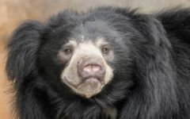
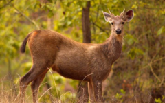
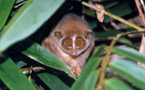
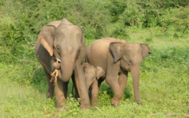
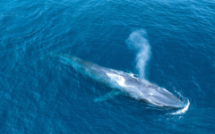
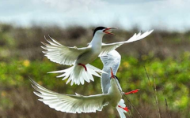

| Image | Animals | Description | Best places to see these wildlife | Best times to see these wildlife |
|---|---|---|---|---|
|  | Sloth Bear | The adorable-looking sloth bear is hard to spot but well worth the effort if you manage to catch sight of one. These creatures might seem clumsy and oafish but they are excellent climbers and gentle with their cubs. | Yala National Park Wilpattu National Park |
Yala - June or July |
|  | Sambar Deer | The sambar is a type of deer found in various countries across Asia and can be recognized by its particularly shaggy coat and long, rugged antlers. The Sri Lankan subspecies of sambar is among the largest in the world. Sambars usually shed their antlers every year. | Horton Plains Yala National Park |
Generally seen year-round |
|  | Red Slender Loris | It is hard not to fall in love with the big eyes and tiny hands of the heart-wrenchingly cute red slender loris. This little primate is on the brink of extinction, making it ever harder to spot in the wild, especially given the fact that it is nocturnal. | Yala National Park | There's no particular season that's best for sightings |
|  | Elephant | The Asian elephant is the number one animal that people on holiday in Sri Lanka hope to spot. It is estimated that Sri Lanka has the highest density of elephants in Asia. | Udawalawe National Park Minneriya National Park |
Udawalawe - year-round Minneriya (elephant gathering) - August to September |
|  | Blue Whale | The largest animal on the planet, the blue whale is a rare delight for wildlife enthusiasts and nowhere in the world are they more reliably spotted than in Sri Lanka. Nothing is quite like the shock of seeing the sheer size of these magnificent beasts in the flesh. | Trincomalee Mirissa |
Trincomalee - June to October Mirissa - November to April |
|  | Birds | Looking towards the sky, travelers will be delighted by the number of endemic birds that can be found in Sri Lanka. Sri Lanka has its very own, unique species of magpies, owls, hornbills, pigeons and parrots and plenty of places to spot them all. | Sinharaja forest reserve Bundala national parks Yala national park Udawalawe national parks Horton Plains |
November to April | Data source: On The Go Tours |